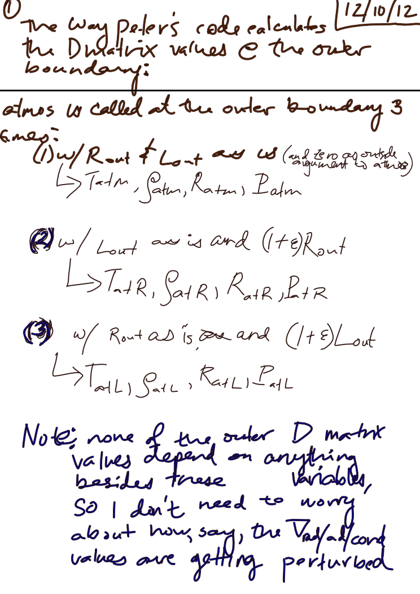
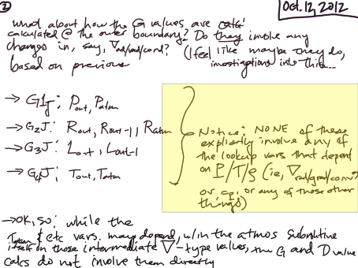
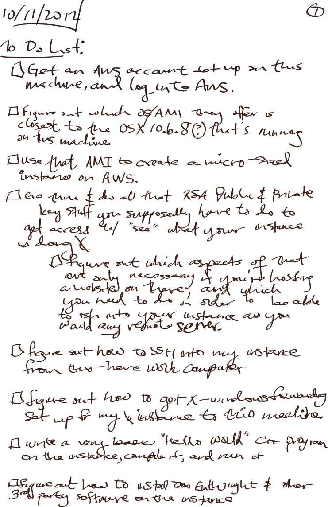

Date & Time: Oct. 11, 2012
Location: campus
Computing context: MachoMac
(/Desktop/Research/CppHenyeyCode/src, /Desktop/Research/BodenheimerCode/UnalteredCode)
From last time:
...I'm pretty sure this boils down to how the outermost G values are calculated, which in turn depends on how the atmospheric P/T/R/rho values are getting calculated. Debugging my atmos subroutine is probably going to be a long, involved, gnarly process that will drag on for about another month.
Still to do:
Still need to fix the problem w/ the G values disagreeing at the outermost boundary
To Do Today:
To do list for the G-debugging, in more detail:
[x] See how Peter's GI() subroutine handles calculating the D matrix values at the outer boundary (The way those derivatives are hard-coded into the subroutine may tell you something about what values/vars are expected to change there due to changes in the atmospheric inner boundary values caused by very slight perturbations in the outermost model values)
[x] Write down what those D matrix value eqns. are right there at the outer boundary.
[x] Write down what those D matrix eqns. are in the 'middle' regions of the model (i.e. b/w the inner and outer boundaries)
Findings: See Notes1 and Notes2 below

Notes1

Notes2
So, it looks like I just need to get the P R and T values out at the outer boundary, and then also at the inner edge of the atmos (?) and I Should be able to compare Peter Is c ode w/ my own, and thereby at Least debug what is going on w/ Helena @ the outer boundary
Although, I'm kind of unsure of of whether getting the exact same Pl T/R/ rho Values that Peter does at the outer boundary is going to let Helena calculate the same dX profiles Mat Peter's code does b/c when I just set the Outer G values to what he got, I didn't end up w/ the same dX profiles that his code did
Though that might well be b/c I didn't also reset the outer most D matrix values to what he'd gotten and those depend not just on how those P,T, and Ratm values are (or the accuracy thereof) but also on how those values are being found to change w/ respect to the outer boundary conds being fed to the atmos subroutine
This, in turn, suggests that not only is my atmos subroutine getting the wrong atmos values, but that it 's also somehow getting the way that the atmos variables couple to and depend upon each other wrong... which surely must be due to the way I coded my Rk4 algorithm in the first place (oh no...)
[] Get Peter's code to write out the atmos vars (T,P,R) at the following points:
[] Just the regular outer boundary, before any of the outer boundary values get changed
[] Outer boundary with *just* the Router value varied
[] Outer boundary with *just* Louter value varied
[] Outer boundary with *just* Touter value varied
[] Outer boundary with *just* Pouter value varied
[] Calculate the G values and the D values by hand, based on the numbers you get out in that previous step.

To
do list for the Amazon Web Service (AWS) distributed computing
testing idea...